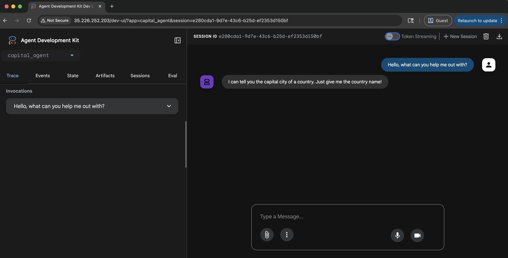

Deploy to Google Kubernetes Engine (GKE)¶
GKE is the Google Cloud managed Kubernetes service. It allows you to deploy and manage containerized applications using Kubernetes.
To deploy your agent you will need to have a Kubernetes cluster running on
GKE. You can create a cluster using the Google Cloud Console or the gcloud
command line tool.
The following example shows you how to deploy a simple agent to GKE. The Python agent is a
FastAPI application that uses Gemini Flash as the LLM. The Go agent uses the
ADK launcher and a statically-linked binary in a minimal container. You can
use Agent Platform or AI Studio as the LLM provider with the environment
variable GOOGLE_GENAI_USE_ENTERPRISE.
Set environment variables¶
Set the variables as described in the
Setup and Installation guide. You will also
need to install the kubectl command line tool. You can find instructions to
do so in the
Google Kubernetes Engine Documentation.
export GOOGLE_CLOUD_PROJECT=your-project-id # Your GCP project ID
export GOOGLE_CLOUD_LOCATION=us-central1 # Or your preferred location
export GOOGLE_GENAI_USE_ENTERPRISE=true # Set to true if using Agent Platform
export GOOGLE_CLOUD_PROJECT_NUMBER=$(gcloud projects describe \
--format json $GOOGLE_CLOUD_PROJECT | jq -r ".projectNumber")
If you don't have jq installed, you can use the following command to get the project number:
And copy the project number from the output.
Enable APIs and permissions¶
- Ensure you have authenticated with Google Cloud (
gcloud auth loginandgcloud config set project <your-project-id>). - Enable the necessary APIs for your project. You can do this using the
gcloudcommand line tool.
gcloud services enable \
container.googleapis.com \
artifactregistry.googleapis.com \
cloudbuild.googleapis.com \
aiplatform.googleapis.com
Grant necessary roles to the default compute engine service account required by
the gcloud builds submit command.
ROLES_TO_ASSIGN=(
"roles/artifactregistry.writer"
"roles/storage.objectViewer"
"roles/logging.viewer"
"roles/logging.logWriter"
)
for ROLE in "${ROLES_TO_ASSIGN[@]}"; do
gcloud projects add-iam-policy-binding "${GOOGLE_CLOUD_PROJECT}" \
--member="serviceAccount:${GOOGLE_CLOUD_PROJECT_NUMBER}-compute@developer.gserviceaccount.com" \
--role="${ROLE}"
done
Deployment payload¶
When you deploy your ADK agent workflow to the Google Cloud GKE, the following content is uploaded to the service:
- Your ADK agent code
- Any dependencies declared in your ADK agent code
- ADK API server code version used by your agent
The default deployment does not include the ADK web user interface libraries,
unless you specify it as deployment setting, such as the --with_ui option for
adk deploy gke command.
Deployment options¶
You can deploy your agent to GKE either manually using Kubernetes
manifests or automatically using the adk deploy gke command.
Choose the approach that best suits your workflow.
Option 1: Manual deployment using gcloud and kubectl¶
Create a GKE cluster¶
You can create a GKE cluster using the gcloud command line tool. This example
creates an Autopilot cluster named adk-cluster in the us-central1 region.
If you're creating a GKE Standard cluster
Make sure Workload Identity is enabled. Workload Identity is enabled by default in an AutoPilot cluster.
gcloud container clusters create-auto adk-cluster \
--location=$GOOGLE_CLOUD_LOCATION \
--project=$GOOGLE_CLOUD_PROJECT
After creating the cluster, you need to connect to it using kubectl. This
command configures kubectl to use the credentials for your new cluster.
gcloud container clusters get-credentials adk-cluster \
--location=$GOOGLE_CLOUD_LOCATION \
--project=$GOOGLE_CLOUD_PROJECT
Create your agent¶
Use the capital_agent example defined on the LLM agents page as a reference.
Organize your project files as follows:
Code files¶
Create the following files (main.py, requirements.txt, Dockerfile, capital_agent/agent.py, capital_agent/__init__.py) in the root of your-project-directory/.
-
This is the Capital Agent example inside the
capital_agentdirectorycapital_agent/agent.pyfrom google.adk.agents import LlmAgent # Define a tool function def get_capital_city(country: str) -> str: """Retrieves the capital city for a given country.""" # Replace with actual logic (e.g., API call, database lookup) capitals = {"france": "Paris", "japan": "Tokyo", "canada": "Ottawa"} return capitals.get(country.lower(), f"Sorry, I don't know the capital of {country}.") # Add the tool to the agent capital_agent = LlmAgent( model="gemini-flash-latest", name="capital_agent", #name of your agent description="Answers user questions about the capital city of a given country.", instruction="""You are an agent that provides the capital city of a country... (previous instruction text)""", tools=[get_capital_city] # Provide the function directly ) # ADK will discover the root_agent instance root_agent = capital_agentMark your directory as a python package
-
This file sets up the FastAPI application using
get_fast_api_app()from ADK:main.pyimport os import uvicorn from fastapi import FastAPI from google.adk.cli.fast_api import get_fast_api_app # Get the directory where main.py is located AGENT_DIR = os.path.dirname(os.path.abspath(__file__)) # Example session service URI (e.g., SQLite) # Note: Use 'sqlite+aiosqlite' instead of 'sqlite' because DatabaseSessionService requires an async driver SESSION_SERVICE_URI = "sqlite+aiosqlite:///./sessions.db" # Example allowed origins for CORS ALLOWED_ORIGINS = ["http://localhost", "http://localhost:8080", "*"] # Set web=True if you intend to serve a web interface, False otherwise SERVE_WEB_INTERFACE = True # Call the function to get the FastAPI app instance # Ensure the agent directory name ('capital_agent') matches your agent folder app: FastAPI = get_fast_api_app( agents_dir=AGENT_DIR, session_service_uri=SESSION_SERVICE_URI, allow_origins=ALLOWED_ORIGINS, web=SERVE_WEB_INTERFACE, ) if __name__ == "__main__": # Use the PORT environment variable provided by Cloud Run, defaulting to 8080 uvicorn.run(app, host="0.0.0.0", port=int(os.environ.get("PORT", 8080)))Note: We specify
agent_dirto the directorymain.pyis in and useos.environ.get("PORT", 8080)for Cloud Run compatibility. -
List the necessary Python packages:
-
Define the container image:
DockerfileFROM python:3.13-slim WORKDIR /app COPY requirements.txt . RUN pip install --no-cache-dir -r requirements.txt RUN adduser --disabled-password --gecos "" myuser && \ chown -R myuser:myuser /app COPY . . USER myuser ENV PATH="/home/myuser/.local/bin:$PATH" CMD ["sh", "-c", "uvicorn main:app --host 0.0.0.0 --port $PORT"]
Create the following files in the root of your-project-directory/.
-
Define the agent and embed the ADK launcher. The launcher handles the
web,api, andwebuisubcommands that start the REST API server and web interface:main.gopackage main import ( "context" "fmt" "log" "os" "strings" "google.golang.org/adk/v2/agent" "google.golang.org/adk/v2/agent/llmagent" "google.golang.org/adk/v2/cmd/launcher" "google.golang.org/adk/v2/cmd/launcher/full" "google.golang.org/adk/v2/model/gemini" "google.golang.org/adk/v2/tool" "google.golang.org/adk/v2/tool/functiontool" "google.golang.org/genai" ) type getCapitalCityArgs struct { Country string `json:"country" jsonschema:"The country to look up."` } func getCapitalCity(_ tool.Context, args getCapitalCityArgs) (string, error) { capitals := map[string]string{ "france": "Paris", "japan": "Tokyo", "canada": "Ottawa", } capital, ok := capitals[strings.ToLower(args.Country)] if !ok { return "", fmt.Errorf("capital not found for %s", args.Country) } return capital, nil } func main() { ctx := context.Background() model, err := gemini.NewModel(ctx, "gemini-flash-latest", &genai.ClientConfig{ APIKey: os.Getenv("GOOGLE_API_KEY"), }) if err != nil { log.Fatalf("Failed to create model: %v", err) } capitalTool, err := functiontool.New( functiontool.Config{ Name: "get_capital_city", Description: "Retrieves the capital city for a given country.", }, getCapitalCity, ) if err != nil { log.Fatalf("Failed to create tool: %v", err) } capitalAgent, err := llmagent.New(llmagent.Config{ Name: "capital_agent", Model: model, Description: "Answers questions about capital cities.", Instruction: "You are an agent that provides the capital city of a country.", Tools: []tool.Tool{capitalTool}, }) if err != nil { log.Fatalf("Failed to create agent: %v", err) } config := &launcher.Config{ AgentLoader: agent.NewSingleLoader(capitalAgent), } l := full.NewLauncher() if err = l.Execute(ctx, config, os.Args[1:]); err != nil { log.Fatalf("Run failed: %v\n\n%s", err, l.CommandLineSyntax()) } }To use Agent Platform instead of AI Studio, set
genai.ClientConfigto use the Agent Platform backend: -
Define the container image. Go compiles to a self-contained static binary, so the container uses a minimal distroless base image — no runtime dependencies or package manager required:
Dockerfile# Stage 1: Build the Go binary FROM golang:1.25 AS builder WORKDIR /app COPY go.mod go.sum ./ RUN go mod download COPY . . # Compile a statically linked Linux/amd64 binary RUN CGO_ENABLED=0 GOOS=linux GOARCH=amd64 \ go build -ldflags="-s -w" -o capital_agent . # Stage 2: Copy the binary into a minimal runtime image FROM gcr.io/distroless/static-debian12 COPY --from=builder /app/capital_agent /app/capital_agent EXPOSE 8080 # Start the API server and web UI CMD ["/app/capital_agent", "web", "-port", "8080", "api", "webui"]
Build the container image¶
You need to create a Google Artifact Registry repository to store your
container images. You can do this using the gcloud command line tool.
gcloud artifacts repositories create adk-repo \
--repository-format=docker \
--location=$GOOGLE_CLOUD_LOCATION \
--description="ADK repository"
Build the container image and push it to Artifact Registry:
Use Cloud Build to build and push the image directly from your source directory:
The multi-stage Dockerfile handles compilation inside the builder stage, so you can use Cloud Build without needing a local Go toolchain:
gcloud builds submit \
--tag $GOOGLE_CLOUD_LOCATION-docker.pkg.dev/$GOOGLE_CLOUD_PROJECT/adk-repo/adk-agent:latest \
--project=$GOOGLE_CLOUD_PROJECT \
.
Alternatively, compile the binary locally and build a smaller image without the multi-stage Dockerfile — useful if you already have Go installed:
# Cross-compile for linux/amd64
CGO_ENABLED=0 GOOS=linux GOARCH=amd64 go build -ldflags="-s -w" -o capital_agent .
# Build and push the image
docker build -t $GOOGLE_CLOUD_LOCATION-docker.pkg.dev/$GOOGLE_CLOUD_PROJECT/adk-repo/adk-agent:latest .
docker push $GOOGLE_CLOUD_LOCATION-docker.pkg.dev/$GOOGLE_CLOUD_PROJECT/adk-repo/adk-agent:latest
Verify the image is built and pushed to the Artifact Registry:
gcloud artifacts docker images list \
$GOOGLE_CLOUD_LOCATION-docker.pkg.dev/$GOOGLE_CLOUD_PROJECT/adk-repo \
--project=$GOOGLE_CLOUD_PROJECT
Configure Kubernetes service account for Agent Platform¶
If your agent uses Agent Platform, you need to create a Kubernetes service
account with the necessary permissions. This example creates a service account
named adk-agent-sa and binds it to the Agent Platform User role.
Skip if using AI Studio
If you are using AI Studio and accessing the model with an API key you can skip this step.
PROJECT_ID=${GOOGLE_CLOUD_PROJECT}
PROJECT_NUM=${GOOGLE_CLOUD_PROJECT_NUMBER}
IAM_URL="principal://[iam.googleapis.com/projects/$](https://iam.googleapis.com/projects/$){PROJECT_NUM}"
WIP="locations/global/workloadIdentityPools/${PROJECT_ID}.svc.id.goog"
SA="subject/ns/default/sa/adk-agent-sa"
gcloud projects add-iam-policy-binding projects/${PROJECT_ID} \
--role=roles/aiplatform.user \
--member="${IAM_URL}/${WIP}/${SA}" \
--condition=None
Create the Kubernetes manifest files¶
Create a Kubernetes deployment manifest file named deployment.yaml in your
project directory. This file defines how to deploy your application on GKE.
cat << EOF > deployment.yaml
apiVersion: apps/v1
kind: Deployment
metadata:
name: adk-agent
spec:
replicas: 1
selector:
matchLabels:
app: adk-agent
template:
metadata:
labels:
app: adk-agent
spec:
serviceAccount: adk-agent-sa
containers:
- name: adk-agent
imagePullPolicy: Always
image: $GOOGLE_CLOUD_LOCATION-docker.pkg.dev/$GOOGLE_CLOUD_PROJECT/adk-repo/adk-agent:latest
resources:
limits:
memory: "128Mi"
cpu: "500m"
ephemeral-storage: "128Mi"
requests:
memory: "128Mi"
cpu: "500m"
ephemeral-storage: "128Mi"
ports:
- containerPort: 8080
env:
- name: PORT
value: "8080"
- name: GOOGLE_CLOUD_PROJECT
value: $GOOGLE_CLOUD_PROJECT
- name: GOOGLE_CLOUD_LOCATION
value: $GOOGLE_CLOUD_LOCATION
- name: GOOGLE_GENAI_USE_ENTERPRISE
value: "$GOOGLE_GENAI_USE_ENTERPRISE"
# If using AI Studio, set GOOGLE_GENAI_USE_ENTERPRISE to false and set the following:
# - name: GOOGLE_API_KEY
# value: $GOOGLE_API_KEY
# Add any other necessary environment variables your agent might need
---
apiVersion: v1
kind: Service
metadata:
name: adk-agent
spec:
type: LoadBalancer
ports:
- port: 80
targetPort: 8080
selector:
app: adk-agent
EOF
Deploy the Application¶
Deploy the application using the kubectl command line tool. This command
applies the deployment and service manifest files to your GKE cluster.
After a few moments, you can check the status of your deployment using:
This command lists the pods associated with your deployment. You should see a
pod with a status of Running.
Once the pod is running, you can check the status of the service using:
If the output shows a External IP, it means your service is accessible from
the internet. It may take a few minutes for the external IP to be assigned.
You can get the external IP address of your service using:
Option 2: Automated Deployment using adk deploy gke¶
Python only
The adk deploy gke command is available for Python only. Go does not have
an equivalent CLI command. Go agents must be deployed using the manual
approach described in Option 1.
ADK provides a CLI command to streamline GKE deployment. This avoids the need to manually build images, write Kubernetes manifests, or push to Artifact Registry.
Prerequisites¶
Before you begin, ensure you have the following set up:
-
A running GKE cluster: You need an active Kubernetes cluster on Google Cloud.
-
Required CLIs:
gcloudCLI: The Google Cloud CLI must be installed, authenticated, and configured to use your target project. Rungcloud auth loginandgcloud config set project [YOUR_PROJECT_ID].- kubectl: The Kubernetes CLI must be installed to deploy the application to your cluster.
-
Enabled Google Cloud APIs: Make sure the following APIs are enabled in your Google Cloud project:
- Kubernetes Engine API (
container.googleapis.com) - Cloud Build API (
cloudbuild.googleapis.com) - Container Registry API (
containerregistry.googleapis.com)
- Kubernetes Engine API (
-
Required IAM Permissions: The user or Compute Engine default service account running the command needs, at a minimum, the following roles:
-
Kubernetes Engine Developer (
roles/container.developer): To interact with the GKE cluster. -
Storage Object Viewer (
roles/storage.objectViewer): To allow Cloud Build to download the source code from the Cloud Storage bucket where gcloud builds submit uploads it. -
Artifact Registry Create on Push Writer (
roles/artifactregistry.createOnPushWriter): To allow Cloud Build to push the built container image to Artifact Registry. This role also permits the on-the-fly creation of the special gcr.io repository within Artifact Registry if needed on the first push. -
Logs Writer (
roles/logging.logWriter): To allow Cloud Build to write build logs to Cloud Logging.
Configure Workload Identity for Agent Platform¶
If your agent uses Agent Platform, the workload running in your cluster needs permission to call the Agent Platform API. Unlike the manual path, adk deploy gke generates a manifest that uses the default Kubernetes service account in the default namespace. Grant the Agent Platform User role to that service account through Workload Identity so the agent can access models such as Gemini.
Skip if using AI Studio
If you are using AI Studio and accessing the model with an API key you can skip this step.
gcloud projects add-iam-policy-binding projects/${GOOGLE_CLOUD_PROJECT} \
--role=roles/aiplatform.user \
--member=principal://iam.googleapis.com/projects/${GOOGLE_CLOUD_PROJECT_NUMBER}/locations/global/workloadIdentityPools/${GOOGLE_CLOUD_PROJECT}.svc.id.goog/subject/ns/default/sa/default \
--condition=None
If you are using a Google Cloud project and skip this step, the agent's pods
start successfully, but requests to the model fail with a
403 PERMISSION_DENIED error when verifying your deployment.
The deploy gke Command¶
The command takes the path to your agent and parameters specifying the target GKE cluster.
Syntax¶
Arguments & options¶
| Argument | Description | Required |
|---|---|---|
| AGENT_PATH | The local file path to your agent's root directory. | Yes |
| --project | The Google Cloud Project ID where your GKE cluster is located. | Yes |
| --cluster_name | The name of your GKE cluster. | Yes |
| --region | The Google Cloud region of your cluster (e.g., us-central1). | Yes |
| --service_type | The type of Kubernetes service to create. Accepts ClusterIP (default) or LoadBalancer. |
No |
| --with_ui | Deploys both the agent's back-end API and a companion front-end user interface. | No |
| --log_level | Sets the logging level for the deployment process. Options: debug, info, warning, error, critical. | No |
How it works¶
When you run the adk deploy gke command, the ADK performs the following steps automatically:
- Containerization: It builds a Docker container image from your agent's source code.
- Image Push: It tags the container image and pushes it to your project's Artifact Registry.
- Manifest Generation: It dynamically generates the necessary Kubernetes manifest files (a
Deploymentand aService). - Cluster Deployment: It applies these manifests to your specified GKE cluster, which triggers the following:
The Deployment instructs GKE to pull the container image from Artifact Registry and run it in one or more Pods.
The Service creates a stable network endpoint for your agent. It defaults to
a ClusterIP service, which is only accessible within the cluster. To expose
your agent to the internet with a public IP address, you must specify
--service_type=LoadBalancer.
Example of use¶
Here is a practical example of deploying an agent located at ~/agents/multi_tool_agent/ to a GKE cluster named test.
adk deploy gke \
--project myproject \
--cluster_name test \
--region us-central1 \
--with_ui \
--log_level info \
~/agents/multi_tool_agent/
Verify your deployment¶
If you used adk deploy gke, verify the deployment using kubectl:
- Check the Pods: Ensure your agent's pods are in the Running state.
You should see output like adk-default-service-name-xxxx-xxxx ... 1/1 Running in the default namespace.
- Find the External IP: Get the public IP address for your agent's service.
By default, the service type is ClusterIP, and EXTERNAL-IP is <none>.
NAME TYPE CLUSTER-IP EXTERNAL-IP PORT(S) AGE
adk-default-service-name ClusterIP 10.12.1.2 <none> 80/TCP 2m
To test your agent, you can use port-forwarding:
You can then access your agent at http://localhost:8080.
If you deployed with --service_type=LoadBalancer, it may take a few minutes for an external IP to be assigned.
Once the EXTERNAL-IP is available, you can navigate to it to interact with your agent.

Test your agent¶
Once your agent is deployed to GKE, you can interact with it via the deployed
UI (if enabled) or directly with its API endpoints using tools like curl.
You'll need the service URL provided after deployment.
UI Testing¶
If you deployed your agent with the UI enabled:
You can test your agent by simply navigating to the kubernetes service URL in your web browser.
The ADK dev UI allows you to interact with your agent, manage sessions, and view execution details directly in the browser.
To verify your agent is working as intended, you can:
- Select your agent from the dropdown menu.
- Type a message and verify that you receive an expected response from your agent.
If you experience any unexpected behavior, check the pod logs for your agent using:
API Testing (curl)¶
You can interact with the agent's API endpoints using tools like curl. This is useful for programmatic interaction or if you deployed without the UI.
Set the application URL¶
Go: API path prefix
The Go ADK server serves all REST endpoints under the /api path prefix
by default. Prepend /api to every path in the examples below when
testing a Go deployment. For example:
| Python | Go |
|---|---|
$APP_URL/list-apps |
$APP_URL/api/list-apps |
$APP_URL/apps/… |
$APP_URL/api/apps/… |
$APP_URL/run_sse |
$APP_URL/api/run_sse |
The prefix can be changed at startup with -path_prefix on the api
subcommand, e.g. CMD ["/app/capital_agent", "web", "-port", "8080", "api", "-path_prefix", ""]
removes the prefix entirely.
List available apps¶
Verify the deployed application name.
(Adjust the app_name in the following commands based on this output if needed. The default is often the agent directory name, e.g., capital_agent).
Create or Update a Session¶
Initialize or update the state for a specific user and session. Replace capital_agent with your actual app name if different.
curl -X POST \
$APP_URL/apps/capital_agent/users/user_123/sessions/session_abc \
-H "Content-Type: application/json" \
-d '{"preferred_language": "English", "visit_count": 5}'
Run the Agent¶
Send a prompt to your agent. Replace capital_agent with your app name and adjust the user/session IDs and prompt as needed.
Go: JSON field names are camelCase
The Python ADK REST API uses snake_case field names in the JSON request
body (e.g. app_name, user_id, new_message). The Go ADK REST API
uses camelCase (e.g. appName, userId, newMessage). Use the
correct format for your deployment language.
- Set
"streaming": trueif you want to receive Server-Sent Events (SSE). - The response will contain the agent's execution events, including the final answer.
Troubleshooting¶
These are some common issues you might encounter when deploying your agent to GKE:
403 Permission Denied for Gemini's models¶
This usually means that the Kubernetes service account does not have the
necessary permission to access the Agent Platform API. Ensure that you have
created the service account and bound it to the Agent Platform User role as
described in the Configure Kubernetes Service Account for Agent
Platform section.
If you deployed with adk deploy gke, bind the default service account
instead, as described in the Configure Workload Identity for Agent
Platform section. If you
are using AI Studio, ensure that you have set the GOOGLE_API_KEY environment
variable in the deployment manifest and it is valid.
404 or Not Found response¶
This usually means there is an error in your request. Check the application logs to diagnose the problem.
export POD_NAME=$(kubectl get pod -l app=adk-agent -o jsonpath='{.items[0].metadata.name}')
kubectl logs $POD_NAME
Attempt to write a readonly database¶
Python only
This error applies to Python deployments that use SQLite for session storage. Go deployments use an in-memory session service by default and are not affected by this issue.
You might see there is no session id created in the UI and the agent does not respond to any messages. This is usually caused by the SQLite database being read-only. This can happen if you run the agent locally and then create the container image which copies the SQLite database into the container. The database is then read-only in the container.
sqlalchemy.exc.OperationalError: (sqlite3.OperationalError) attempt to write a readonly database
[SQL: UPDATE app_states SET state=?, update_time=CURRENT_TIMESTAMP WHERE app_states.app_name = ?]
To fix this issue, you can either:
Delete the SQLite database file from your local machine before building the container image. This will create a new SQLite database when the container is started.
or (recommended) you can add a .dockerignore file to your project directory
to exclude the SQLite database from being copied into the container image.
Build the container image and deploy the application again.
Insufficient Permission to Stream Logs ERROR: (gcloud.builds.submit)¶
This error can occur when you don't have sufficient permissions to stream build logs, or your VPC-SC security policy restricts access to the default logs bucket. To check the progress of the build, follow the link provided in the error message or navigate to the Cloud Build page in the Google Cloud Console.
You can also verify the image was built and pushed to the Artifact Registry using the command under the Build the container image section.
Gemini models not supported in Live Api¶
When using the ADK Dev UI for your deployed agent, text-based chat works, but
voice (e.g., clicking the microphone button) fail. You might see a
websockets.exceptions.ConnectionClosedError in the pod logs indicating that
your model is "not supported in the live api".
This error occurs because the agent is configured with a model (like
gemini-flash-latest in the example) that does not support the Gemini Live
API. The Live API is required for real-time, bidirectional streaming of audio
and video.
Cleanup¶
To delete the GKE cluster and all associated resources, run:
gcloud container clusters delete adk-cluster \
--location=$GOOGLE_CLOUD_LOCATION \
--project=$GOOGLE_CLOUD_PROJECT
To delete the Artifact Registry repository, run:
gcloud artifacts repositories delete adk-repo \
--location=$GOOGLE_CLOUD_LOCATION \
--project=$GOOGLE_CLOUD_PROJECT
You can also delete the project if you no longer need it. This will delete all resources associated with the project, including the GKE cluster, Artifact Registry repository, and any other resources you created.